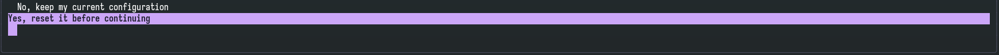
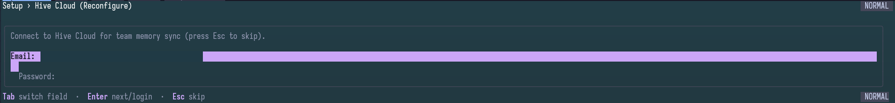
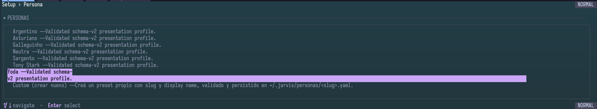
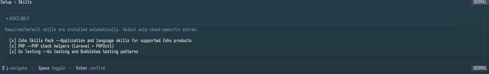
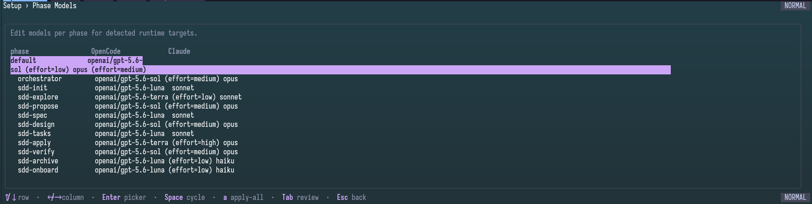
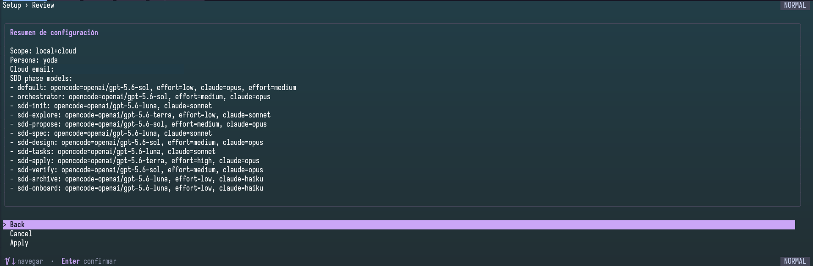
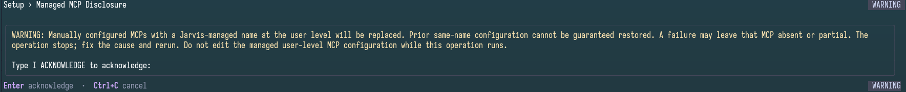
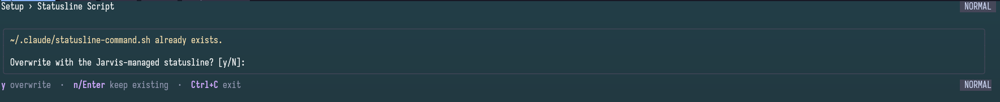

Ruta orientativa de instalación
Pasos sugeridos, no plazos ni resultados observados. Detente si necesitas soporte.
- Preparar: confirma terminal, red y agente elegido. Criterio observable: puedes abrir PowerShell e identificar la integración prevista.
- Instalar: ejecuta el comando documentado. Criterio observable: PowerShell reconoce
jarviso registras el fallo. - Configurar: abre
jarvis. Criterio observable: completas el asistente o identificas dónde se detuvo.
1. Antes de empezar
Para quien usa Windows y quiere preparar un agente compatible mediante la CLI. Necesitas PowerShell, conexión para descargar la versión de producción publicada y el agente que vayas a configurar (por ejemplo, Claude Code u OpenCode). Consulta con tu equipo qué integración y credenciales te corresponden; no compartas claves ni captures datos privados.
Esta guía usa PowerShell nativo. Si utilizas WSL, sigue la guía de Ubuntu/Linux para ese entorno; no mezcles rutas ni comandos entre sistemas.
2. Hito sugerido: instalar
Abre PowerShell y ejecuta el instalador documentado para la última versión de producción publicada. Revisa el origen del script según la política de tu organización. Este comando no acredita por sí solo una instalación limpia verificada.
irm https://raw.githubusercontent.com/Thrasno/jarvis-ai-devs/master/scripts/install.ps1 | iexOpcional: canal beta (no producción). Si tu equipo te ha indicado probar la beta, usa estos comandos en PowerShell en lugar del anterior. La variable selecciona la versión pública beta; no es el procedimiento de instalación estable.
$env:JARVIS_INSTALL_VERSION = "beta"
irm https://raw.githubusercontent.com/Thrasno/jarvis-ai-devs/master/scripts/install.ps1 | iexSegún la documentación, el instalador coloca Jarvis en %LOCALAPPDATA%\Programs\jarvis y añade esa ubicación al PATH de usuario. Si el comando no aparece al terminar, abre una nueva sesión de PowerShell antes de diagnosticar el PATH.
Evidencia pendiente: la captura de inicio del instalador beta disponible para Linux/amd64 no demuestra una instalación finalizada ni acredita el instalador de Windows. Aún falta una captura real de instalación en PowerShell; las capturas del asistente tampoco la sustituyen.
3. Hito sugerido: primera configuración
Ejecuta jarvis. En una instalación nueva se espera el asistente de configuración; en otra ya configurada se abre la reconfiguración con valores previos. Elige solo las integraciones que efectivamente utilizas (por ejemplo, Claude Code u OpenCode) y sigue las opciones que muestre tu versión. No hay un conjunto universal de pantallas ni una selección obligatoria para todos los equipos.
jarvisLas siguientes capturas proceden de una sesión en WSL/Linux y muestran el asistente compartido. Son ejemplos de opciones visibles en esa sesión, no pruebas de instalación o verificación específicas de Windows ni de Ubuntu/Linux. Las opciones pueden variar según la versión y las integraciones detectadas.









